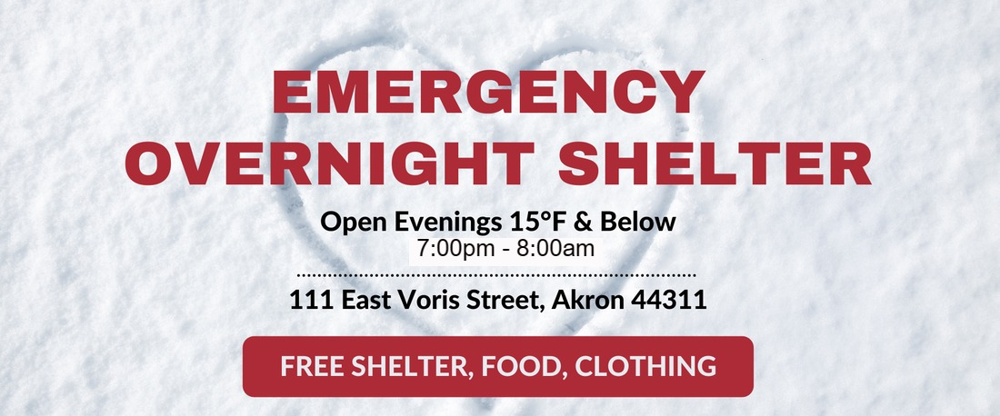

Timeline photos
I just got notice of the Akron Emergency Shelter schedule and volunteer opportunities.
It's official...with some nasty weather quickly approaching, Winter is upon us.
The Akron Emergency Overnight Shelter will be open on the following nights:
Saturday Night 1/13/2024
Sunday Night 1/14/2024
Monday Night 1/15/2024
Tuesday Night 1/16/2024
Wednesday Night 1/17/2024
Thursday Night 1/18/2024
Friday Night 1/19/2024
Saturday Night 1/20/2024
Sunday Night 1/21/2024
Monday Night 1/22/2024
On-Site Security
If you'd like to join us in volunteering or donating, please visit the Akron Emergency Overnight Shelter website:
https://www.akronemergencyshelter.org/volunteer--donate.html
EOS Community Guidelines for Guests:
All Guests must adhere to the EOS Community Guidelines - anyone in violation will be asked to leave.
NO Weapons, Illegal Drugs, Alcohol Allowed
Guests MUST stay inside assigned cubicle – except for Restroom or Outdoor Breaks
Outdoor Breaks allowed until Lights Out at 10pm – Outdoor Break times will be announced
Guests MUST check-in with Security after each Outdoor Break
NOTE: All Guests will be screened for COVID-19 prior to entry. Any Guest exhibiting symptoms will be immediately referred to an EMT for off-site medical attention.
The Emergency Overnight Shelter is a community partnership among The Peter Maurin Center, Summit County Continuum of Care, and Community Support Services.
The EOS is fully staffed and managed by area volunteers.
IF YOU'RE INTERESTED IN HELPING OUT AT OUR OVERNIGHT SHELTER IN AKRON, YOUR VOLUNTEERING WILL ONLY BE NEEDED DURING CERTAIN HOURS.
YOU WILL NOT BE SPENDING THE NIGHT, AS SECURITY WILL BE AVAILABLE OVERNIGHT, AS WELL AS DURING THE DAY.
THIS IS A BEAUTIFUL EXPERIENCE IF YOU’VE NEVER TRIED IT. PLEASE SIGN UP IF YOU ARE ABLE TO HELP WITH FOOD DONATIONS, MONEY DONATIONS OR YOUR TIME.
THANK YOU FOR YOUR CONSIDERATION AND GOD BLESS!
MAY WE ALWAYS BE GRATEFUL FOR OUR WARM HOMES AND BEDS!